Since 2017 © MIT CSAIL (HCI Engineering group) [redesign by
moji
].
All Rights Reserved.


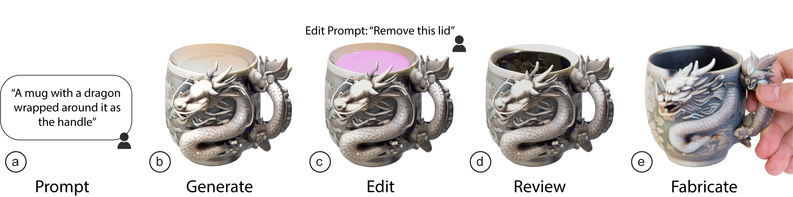
Figure 1. InstructMesh enables fabrication-relevant refinement of generative 3D models through selective editing. a) A user provides an initial prompt. b) The system generates a 3D model, but may include fabrication-related flaws (e.g., a sealed lid). c) The user selects the problematic region and provides a descriptive edit prompt. d) InstructMesh applies an edit operation in the latent-space to remove the lid while preserving other regions and regenerates the model. e) The final model is fabricated as a functional mug.
Recent advances in generative AI allow users to create 3D models from text or images. However, these models prioritize visual plausibility over geometric accuracy, often generating results with flaws that compromise their intended use post-fabrication. We present InstructMesh, an interactive post-generation refinement tool that enables selective repair of generative 3D models through region selection and targeted operations, such as opening or sealing voids, or adjusting local thickness. Users can invoke edit operations via natural language prompts or slider controls. By operating directly on the intermediate latent representation, InstructMesh allows users to apply robust geometric corrections without requiring expert modeling skills. To inform our design, we first analyze common fabrication-related failure modes in outputs from state-of-the-art generative tools. We then conduct two user studies, demonstrating that novices can identify and perform fabrication-relevant repairs on generative outputs using InstructMesh, and revealing user preference for hybrid interfaces that combine slider controls with natural language input.
Generative AI has enabled new forms of creative expression across modalities like text, images, music, and 3D geometry. In the 3D domain, these advances now allow users with minimal modeling experience to generate novel 3D models from text or image prompts, bypassing the steep learning curve of traditional 3D modeling tools. However, while generative models produce visually plausible outputs, they are typically trained with image-based supervision, prioritizing appearance over the geometric properties required for real-world fabrication. As a result, generated models could exhibit flaws such as sealed openings, insufficient wall thickness, or missing structural connections, that only become apparent when a model is fabricated and used in a downstream physical task.
Bridging the gap between a visually plausible model and a physically usable one requires fabrication-relevant repairs that are difficult for novices to achieve. Mesh-editing tools such as Blender or MeshMixer can address geometric flaws, but require significant domain expertise and effort that novices may not have. Recent text-driven 3D editing methods such as DreamEditor and TIP-Editor allow localized edits guided by text prompts, but operate on neural radiance fields to target visual appearance rather than the fabrication-specific geometric corrections needed for real-world use. Similarly, tools like Style2Fab and TactStyle support functionality-aware transformations of existing designs, but assume that the relevant functional geometry already exists in the base model, focusing on preservation rather than repair. Finally, re-prompting the generative model is often unreliable: prior work shows that non-experts struggle to craft effective prompts, often producing vague or overly rigid instructions that fix one issue, only to alter other desired details, trapping them in a frustrating prompt-refinement loop.
To bridge this gap, we introduce InstructMesh, an interactive post-generation refinement tool that supports fabrication-relevant repairs of generative 3D models by mapping user-specified edits to targeted operations on the model's intermediate latent representation. Rather than forcing novices to edit the mesh directly, InstructMesh modifies the coarse voxel grid produced by the generative model's encoder, then passes the edited representation through the decoder to produce a refined mesh. This allows the generative model to fill in low-level details such as texture and surface topology, while satisfying the user's intended geometric correction.
A key challenge in designing such tools for generative 3D models is determining how novices should express geometric corrections: through natural language, which is expressive but ambiguous, or through structured controls, which are precise but require understanding the available operations? To investigate this, InstructMesh provides two complementary interaction modes: a natural language interface through an LLM, and a slider interface exposing a library of parameterized operations. In both modes, users first highlight a problematic region on the mesh, then specify the desired change. A second design challenge arises from the opacity of latent-space editing: because the intermediate representation is non-visual, users cannot anticipate how their edit will affect the final mesh. To make this process controllable, InstructMesh provides a preview visualization, showing additive edits in green and subtractive edits in red, making the latent-space edit tangible before regeneration is triggered. This introduces WYSIWYG (What You See Is What You Get)-style interaction into generative 3D modeling, allowing users to inspect, revise, and confirm edits on the intermediate representation, thereby maintaining direct control over the generative process. Together, these design choices enable us to investigate two research questions about novice-driven repair of generative 3D models for fabrication. First, can novices reliably identify and correct visually identifiable fabrication-relevant flaws using latent-space editing, a task that has traditionally required sophisticated mesh-manipulation skills? Second, how do the choice of interaction mode and the availability of visual feedback on the intermediate representation shape their editing experience?
In summary, this work contributes:
A key challenge in using generative AI for 3D modeling is ensuring that outputs contain the geometric details needed for physical functionality such as appropriate wall thickness, openings, and manifold integrity. We hypothesize that current generative models replicate aesthetic properties but fail to capture these local geometric details, rendering models non-functional after fabrication. To test this, we conducted a formative study assessing geometric errors in reconstructions of popular 3D models from Thingiverse.
Dataset Selection and Generative 3D ReconstructionThingiverse is a popular online resource for novice and expert makers to share designs or things for 3D printing. We selected the 100 most popular `things' (collections of models) from Thingiverse, skipping multi-part components without assembled versions since current generative tools produce single meshes. After preprocessing, the dataset comprised of 120 distinct unique 3D models (100 unique `things' from Thingiverse). We rendered one image of each model and reconstructed it using Trellis, chosen for its state-of-the-art geometric fidelity. While we scope our analysis on Trellis for consistent reconstruction and evaluation, nearly all current 3D generative methods employ a similar two-stage encoder-decoder pipeline with image-based training objectives.
Table 1. Taxonomy of Fabrication-Relevant Geometric Flaws in 3D Model Reconstructions. Based on 120 most popular 3D models on 3D model website Thingiverse.
| Flaw Category | Description | Models Affected |
|---|---|---|
| Missing Openings | Absence of essential through-holes, ventilation gaps, volumes to contain liquids or support airflow. | 48.6% |
| Fused Joints | Components meant to rotate or articulate (e.g., hinges, pivots, ball joints, axles) are fused, preventing intended motion. | 13.5% |
| Broken or Missing Bridges | Crucial geometric connections between parts are missing, leaving the structure fragmented or unsupported. | 10.8% |
| Extraneous Artifacts | Unintended bumps, extensions, or disconnected mesh elements. | 65.8% |
| Fused / Duplicated Features | Features are erroneously duplicated, stacked, or fused together, often due to generative ambiguity. | 27% |
| Hollowing Errors | Solid elements are mistakenly hollowed or vice versa. | 36.9% |
| Wall Thickness Issues | Non-uniform or insufficient wall thicknesses. | 20.7% |
| Topological Errors | Gaps, tears, or ambiguous topologies in the mesh. | 9.9% |
| Truncated Features | Extrusions or geometric extensions are prematurely cut off, resulting in incomplete or malformed shapes. | 9.9% |
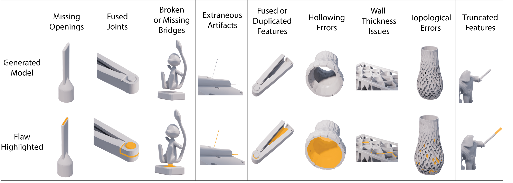
Figure 2. Descriptive examples of flaws found in our formative study. Models were sourced from Thingiverse, reconstructed with 3D generative model Trellis using their image as input, and evaluated manually for geometric functionality errors by reviewers.
Inductive Taxonomy DevelopmentWe used an iterative qualitative coding method to develop our taxonomy of geometric flaws in 3D models: geometric errors in reconstruction that impact the functionality of the 3D model. For each of the 120 3D models, two expert annotators in 3D modeling compared the generated model and the original model, and described the issues in natural language. Their task was to describe each individual issue independently, and describe the change required. Next, they discussed these annotations and came to an agreement on the issues found.
Iterative Categorization of IssuesNext, the two annotators independently grouped similar descriptions of issues, then collaboratively discussed and refined these groupings. We continued this process over multiple rounds of iterative refinement, merging overlapping categories and sharpening definitions through discussion until consensus was reached. The process concluded when no new categories emerged from additional data, at which point the taxonomy had stabilized at nine flaw categories. We report these categories in Table 1 and show descriptive examples in Figure 2.
Deductive ClassificationAfter developing our taxonomy of fabrication-relevant geometric flaws, we performed a deductive classification of the dataset using the previously collected annotations. The two expert annotators revisited their initial descriptions and mapped each issue to one or more of the nine categories found in the taxonomy.
Across the 120 models analyzed, we found that fabrication-relevant flaws were widespread: 94 models (78.3%) exhibited more than one distinct type of issue, highlighting the compounding nature of geometric failures in generative reconstructions. On average, each model exhibited 2.4 issues (SD = 1.10), suggesting that these flaws commonly co-occur and cannot be addressed through isolated fixes. The most frequently encountered issues were Extraneous Artifacts (65.8%), Missing Openings (48.6%), and Hollowing Errors (36.9%), while more localized structural flaws like Broken / Missing Bridges (10.8%) or Truncated Features (9.9%) appeared less frequently.
These findings suggest that while state-of-the-art generative models achieve high visual fidelity, they overlook fine-grained geometric properties critical for fabrication, which can be difficult to capture through image-based supervision. The prevalence and diversity of these flaws motivate the design of post-generation tools that support targeted, user-guided geometric correction. We describe our approach in the following section.
InstructMesh enables users to generate 3D models with text or image prompts and iteratively refine them to fix fabrication-relevant issues. Recent 3D generative methods, including TRELLIS and SPAR3D, employ a two-stage pipeline: an encoder produces a coarse latent structure (e.g., point cloud or voxel grid) and contextual features about appearance, and a decoder refines this information into a high-fidelity mesh. One key idea is that this separation enables controlled customization by modifying this intermediate representation.
InstructMesh operates directly on this intermediate latent voxel representation. We use TRELLIS as the generative backbone, which represents each shape as a structured latent over a 64³ sparse voxel grid; we persist the latent structure alongside the decoded mesh so that user edits can be applied to this latent structure and decoded to produce a new mesh. Figure 3 illustrates the system design, which comprises of: (1) a set of latent-space operations derived from common fabrication flaws, (2) dual interaction modes—a natural language interface powered by an LLM and a slider interface exposing parameterized presets, and (3) a preview visualization that highlights additive edits in green and subtractive edits in red before they are committed. Together, these components provide fine-grained customization with generative 3D models while maintaining user's transparency and control.
We focus on repairing static functionality in 3D models, as current generative methods do not yet support dynamic mechanisms (e.g., hinges or interlocking parts) that require precise geometric and mechanical constraints. Our goal is to address the static fabrication-related flaws identified in our formative study, with the exception of Fused Joints, which involves articulated or mechanical components.
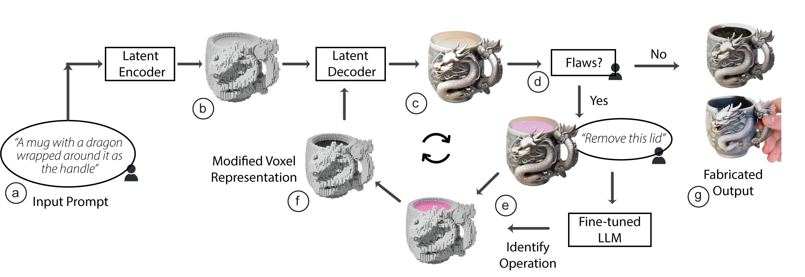
Figure 3. InstructMesh System Overview. (a) The user provides a text or image prompt. (b) The model is encoded into a latent voxel representation and (c) decoded into a textured mesh. (d) The user inspects the mesh for flaws; if none, the model proceeds to (g) fabrication. Otherwise, the user highlights a region and specifies an edit. (e) The latent operation is applied and previewed. (f) Once confirmed, the edited latents are decoded into a refined model.
User Interface and Workflow
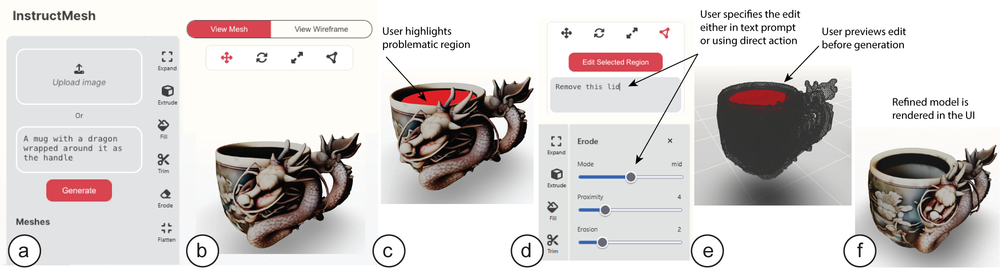
Figure 4. The InstructMesh web interface. (a) Users enter a text or image prompt. (b) The generated mesh is inspected for flaws. (c) Users paint the problematic region. (d) The edit is specified via natural language or direct selection. (e) A preview is shown for confirmation. (f) The refined model is generated.
Figure 4 shows the InstructMesh web interface. Users begin by providing a text or image prompt to generate a 3D model (Figure 4a), which is rendered for inspection (Figure 4b). If a flaw is identified, they activate Highlight Region and paint the problematic area (Figure 4c). Users can then specify the desired edit either by entering a natural language instruction or by selecting an operation from the slider interface (Figure 4d).
Before the edit is applied, the system presents a preview overlay: additive changes are shown in green and subtractive changes in red (Figure 5). This makes latent edits transparent and gives users the opportunity to revise or cancel. Once confirmed, the operation is executed on the corresponding subset of the latent representation and decoded into an updated mesh (Figure 4f). The edited model appears next to the original for side-by-side comparison, and users can continue refining, undo an operation, or download the final repaired model.
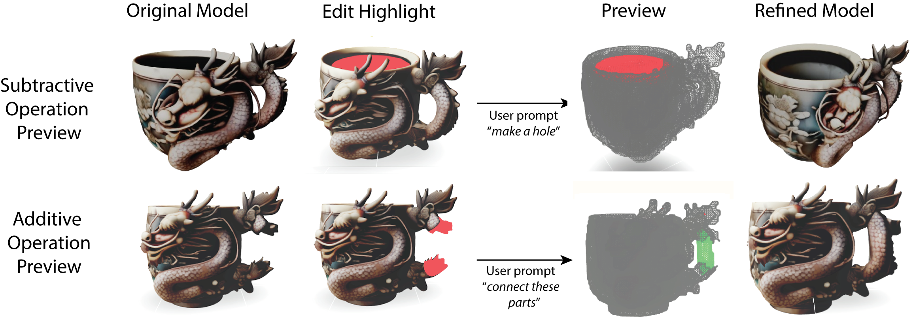
Figure 5. Preview visualizations of canonical operations. Top: a subtractive edit (“make a hole”) removes the sealed lid. Bottom: an additive edit (“connect these parts”) generates a handle. Red regions indicate subtractive changes; green indicates additive. Previews let users verify edits on the latent representation before triggering regeneration.
This workflow enables localized, in-situ corrections, abstracting away the complexity of latent manipulation, while providing transparent feedback loops through preview visualizations. Our goal with this design is to enable novices to iteratively refine generative 3D models with both expressiveness and control.
Canonical Operations to Modify Latent RepresentationEditing the latent voxel representation, rather than directly modifying the mesh, offers key advantages. Latent grids are coarser and lack explicit connectivity, making them easier to manipulate without navigating complex mesh topology. Additionally, the edited voxels are processed by the decoder, which combines them with learned appearance features to produce a coherent mesh, synthesizing missing geometry without requiring the topology-aware, texture-preserving edits required in tools like Blender. This enables novices to make structural corrections that would otherwise require expert-level mesh manipulation.
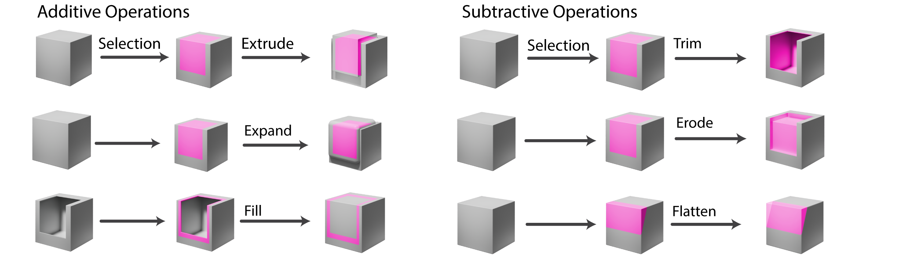
Figure 6. Canonical operations on voxel representations. User highlights (pink) are mapped to regions in the latent voxel grid. Additive operations (left) grow occupancy via extrusion, expansion, or filling. Subtractive operations (right) reduce occupancy via trimming, erosion, or flattening. The modified grid is decoded to produce the refined model.
Mapping Selections to the Latent Representation. When a user highlights a region on the decoded mesh, the system maps this selection back to the latent voxel grid as follows. First, it recovers the decoder's coordinate transformation by aligning the mesh's bounding box to the voxel grid via scaling, rotation, and translation. The selected faces are then extracted as sub-meshes in this voxel-aligned frame, where they serve as geometric references for the canonical operations: each sub-mesh identifies the voxels to modify. For example, fill uses convex-hull containment, while trim uses signed-distance queries. The modified voxel structure is then passed through the TRELLIS decoder, which regenerates a coherent mesh from the edited representation.
This pipeline is tolerant to imprecise selection through three mechanisms. First, the selection is not treated as an exact voxel mask: connected components below a minimum size are discarded, removing stray fragments from accidental brushing, while all remaining sub-meshes are retained to support disjoint selections (e.g., the two endpoints of a broken bridge). Second, operations act on the neighborhood of these sub-meshes using a proximity radius. Expand, for instance, grows voxels outward from the selection, so that missing a few faces still produces a coherent edit. Third, the preview renders the modified voxels directly, without invoking the decoder, allowing users to verify the actual effect of an operation before committing (Figure 5).
With selections mapped onto the latent grid, the system next needs a vocabulary of edits to apply there. We defined a small set of canonical operations analogous to geometric primitives such as extrude or subtract, that are compatible with latent voxel grids and composable: individual edits can be combined or sequenced to address complex repair scenarios (Figure 6). We group our operations into two classes:
Additive Operations. These increase voxel occupancy by extending surfaces outward, thickening thin regions, or filling enclosed volumes. They are used to reinforce fragile areas or close gaps.
Subtractive Operations. These reduce occupancy by cutting away selected regions, thinning shells, or smoothing surfaces. They are used to remove unwanted material, hollow interiors, or prepare flat contact areas.
Together, these operations form a compact, extensible vocabulary for repairing generated 3D models. The latent voxel representation provides a meaningful locus of operations, and the flexibility of decoding process into the final mesh allows us to create these representation-agnostic operations. Thus, these representation switches are abstracted away from the user who can focus on the high level design intent. Each operation can be parameterized (e.g., extrusion depth, erosion thickness), enabling a range of functional modifications.
Operation Prediction Using LLMs with In-Context LearningTo map natural language edit descriptions to canonical operations, we employ in-context learning (ICL) with OpenAI's GPT-4. The LLM does not interpret or edit 3D geometry directly: it maps the user's instruction to an operation and parameters from our fixed vocabulary, while spatial grounding comes from the user's region selection. Constraining the LLM to select from a pre-parameterized set of operations rather than synthesize direct edits, keeps each edit interpretable and bounded. This is consistent with prior work showing that scoping an LLM to a fixed set of operations improves reliability in human-AI interaction. We provide a set of labeled description-operation pairs drawn from the 20% development split of our formative dataset directly in the prompt. For example, given the description “the mug has a sealed lid that should be open,” the model predicts erode as the appropriate operation. By including examples spanning all operation types and flaw categories, the model learns to map new user instructions to the fixed operation vocabulary without fine-tuning. We chose ICL over fine-tuning for its simplicity and adaptability: new operations can be incorporated by extending the example set without retraining. While our implementation uses GPT-4, the approach is model-agnostic: any modern LLM can serve as the backend with the proposed ICL approach.
Each canonical operation has tunable parameters that must be calibrated to reliably rectify the flaws identified in our taxonomy. To this end, we conducted a technical evaluation. We first randomized our dataset and split it using an 80%-20% split. We used the 20% set as a `development set' to calibrate each operation, and used the 80% to evaluate its accuracy in resolving an issue.
Using the development set, we manually calibrated each operation (e.g., expand, extrude, erode, fill) by highlighting affected regions and testing parameter ranges for their ability to resolve the target flaw. We found that different flaw contexts required distinct parameterizations. Balancing flexibility against interface complexity and LLM prediction accuracy, we defined twelve calibrated presets across six operations. These presets function as operational modes that can be invoked via natural language or the slider interface.
Flaw Correction AccuracyWe tested our calibrated operations on the 80% test split from our formative study. The operations were conducted by the authors with InstructMesh, and the resulting 3D models were stored. To evaluate the repairs, an independent reviewer assessed each flaw and judged whether the correction was successful or unsuccessful. This evaluation was conducted at the flaw level, meaning each flaw was independently repaired, stored, and assessed by the independent reviewer.
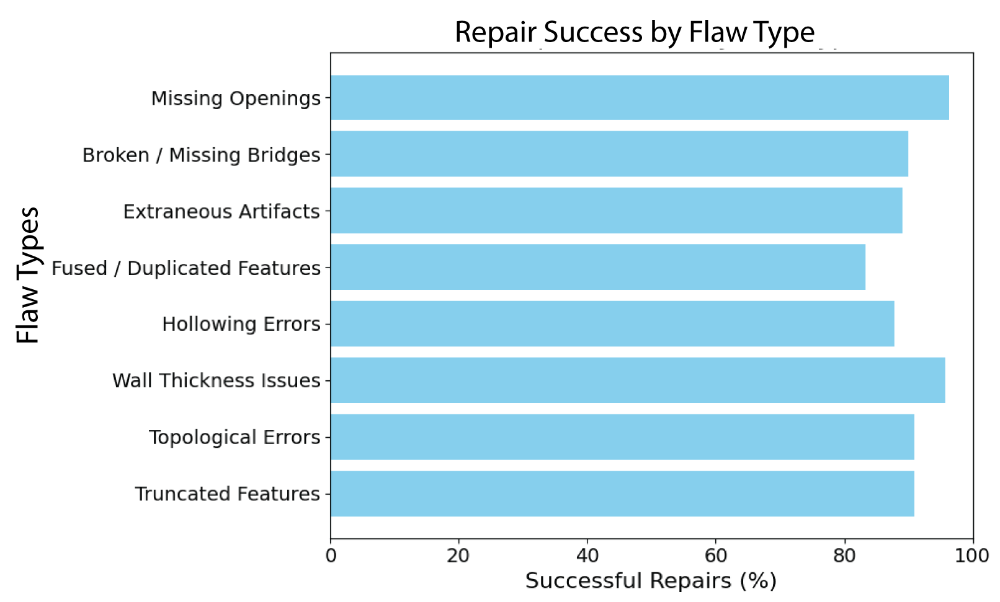
Figure 7. Success rates of canonical operations in resolving fabrication-relevant geometric flaws. This evaluation was conducted on 80% of flaw instances from our annotated dataset. For each flaw, a predefined canonical operation was applied through region selection and LLM-guided latent editing.
As shown in Figure 7, InstructMesh successfully repaired a high proportion of flaws across all categories. The most reliably repaired issues included Missing Openings (96.3%) and Wall Thickness Issues (95.65%), while the lowest success rate was observed for Fused / Duplicated Features at 83.33%. These results demonstrate that the latent operations implemented in InstructMesh are broadly effective across a diverse set of fabrication-relevant flaw types.
Runtime EfficiencyWe also evaluated runtime performance. Using Trellis for image-to-3D generation, the average generation time was 31.7s (SD = 3.7s). Applying region-specific latent operations increased this to 43.7s (SD = 5.2s), reflecting the added computation for localized manipulation and regeneration. Despite this overhead, edits remained well under a minute, supporting iterative design workflows.
LLM Accuracy for Operation SelectionUsing the in-context learning setup described above, GPT-4 achieved 92.1% accuracy in predicting the correct canonical operation on the 80% test split, demonstrating that in-context learning is sufficient to map natural language instructions to our operation vocabulary without fine-tuning.
Implementation DetailsThe generative pipeline is implemented in Python and deployed on a cloud-based server (Intel CPU, 32 GB RAM, NVIDIA L4 GPU with 24 GB memory). Canonical latent-space operations were implemented using PyTorch, Pymeshlab and Trimesh.
For InstructMesh to be effective, novices must be able to (1) identify functional flaws in generated models and (2) repair them independently and efficiently using our system. We designed our first study to evaluate both capabilities.
Study DesignWe recruited 12 participants (7 male, 5 female; ages 20–39, M = 27.3, SD = 5.6) from a university campus, including undergraduate and graduate students across non-technical disciplines. None had prior experience with 3D modeling, CAD tools, or digital fabrication. Participants worked with five flawed 3D models randomly drawn from our formative study (Figure 8), each containing between one and four annotated fabrication flaws. For each model, participants first inspected the mesh and identified flaws while thinking aloud. They then used InstructMesh to attempt repairs, with up to 10 minutes per model. Participants could address flaws in any order. After completing their edits, participants judged for each flaw whether the repair was successful or unsuccessful. An independent researcher, post user-study sessions, evaluated the final meshes in the same way. We measured task completion time, the number of flaws identified and repaired, and repair success rates based on both participant and expert judgments.
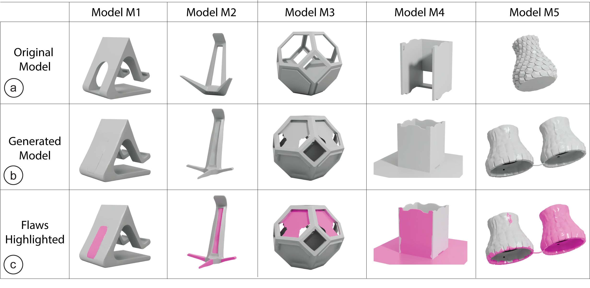
Figure 8. Overview of the five models used in our user study (M1–M5). (a) Original model. (b) Flawed version from a generative model. (c) Fabrication-related flaws highlighted in pink.
ResultsWe report findings across flaw identification, repair time, and repair success, using repeated-measures ANOVAs to test for effects of model and flaw type.
Error Identification. Participants successfully identified 90.4% of fabrication-relevant flaws in AI-generated models (Figure 9), showing that novices could reliably recognize most issues. However, performance varied by both model and flaw type. A repeated-measures ANOVA revealed a significant effect of model (F(4,55) = 3.06, p < 0.05); post-hoc tests showed that flaws in Model M1 were significantly easier to detect than those in Model M5 (p < 0.05). This suggests that flaws in more geometrically complex models can be harder to perceive.
Flaw type also had a significant effect (F(5,139) = 19.24, p < 0.0001). Topological issues were the hardest to detect, performing significantly worse than truncated features, extraneous artifacts, missing openings, and fused features. In contrast, extraneous artifacts and missing openings were among the most readily identified. Together, these results demonstrate that while novices can generally identify fabrication flaws, both the geometry of the model and the type of flaw strongly affect detectability.
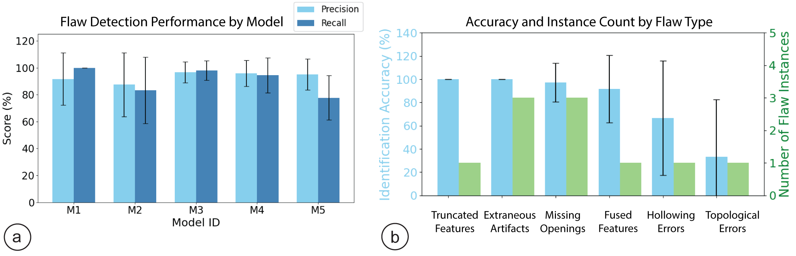
Figure 9. Flaw Identification Performance. (a) Precision and recall of flaw detection across five generated 3D models (M1–M5). (b) Average identification accuracy (left axis) and number of flaw instances (right axis) for each flaw type.
Repair Times. Repair efficiency varied significantly across both models and flaw types (Figure 10). A repeated-measures ANOVA revealed a significant effect of model on repair time (F(4,55) = 7.27, p < 0.001), with simpler models (e.g., M1) repaired significantly faster than more complex ones (M3, M4, M5).
Flaw type also had a significant effect on repair time (F(5,121) = 5.43, p < 0.001). Truncated features (3.00 ± 0.95 min) took significantly longer to repair than topological errors (1.50 ± 0.52 min, p < 0.01) and fused features (1.84 ± 0.75 min, p < 0.05); missing openings (2.33 ± 1.24 min) also took longer than topological errors (p < 0.05). These results suggest that while flaws such as topological errors were harder to identify, they could be resolved quickly once recognized, whereas flaws like truncated features required more time-consuming interventions.
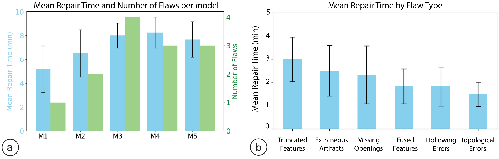
Figure 10. Repair Time and Effort. (a) Mean repair time and number of flaws per model, indicating that models with more flaws required longer repair times. (b) Mean repair time by flaw type. Simpler flaws like topological errors and fused features were repaired faster, while truncated features and missing openings took longer.
Repair Correction Performance. An independent expert in 3D modeling and fabrication evaluated all user-corrected meshes (Figure 11). Each flaw was judged as successfully repaired or not, based on whether functionality was restored. Overall, 89.7% of flaws were successfully repaired, with only 16 failures out of 156 annotated flaws.
A repeated-measures ANOVA showed no significant effect of model on repair correctness (F(4,55) = 2.25, p > 0.05), but flaw type had a significant effect (F(5,121) = 2.33, p < 0.05). Post-hoc tests, however, did not reveal significant differences between specific flaw categories. This suggests that while some flaw types may be more challenging, InstructMesh enabled novices to produce successful fabrication-relevant repairs across diverse models.
We also compared participants' self-assessments with the expert's ratings. No significant difference was found (F(1,587) = 0.40, p > 0.05), indicating close alignment between novices' perception of successful repair and expert evaluation. Only 11 cases (7.1%) showed disagreement, where participants believed a flaw was fixed but the reviewer did not. Overall, these results suggest that novice users were able to identify and correct functional errors in AI-generated 3D models with a high degree of accuracy.
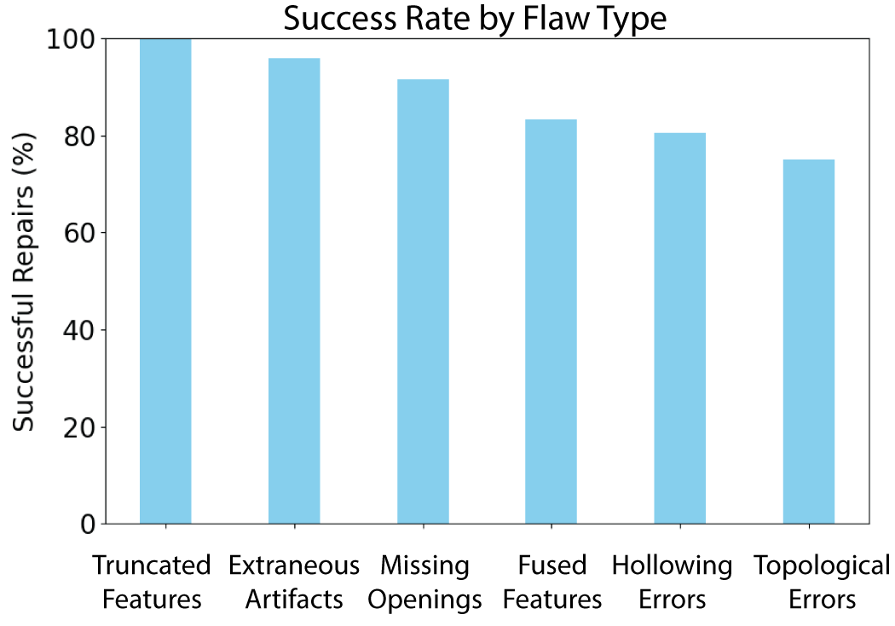
Figure 11. Repair Success by Flaw Type. Participants successfully repaired most flaw types, with success rates exceeding 80% for all categories.
Participant FeedbackParticipants responded positively to InstructMesh, highlighting its ease of use and low barrier to entry. P2 remarked, “I like that you can undo your changes, and I just have to describe my changes in text. It's very easy to get used to the tool.” P6 emphasized that “I don't feel the need to learn CAD software,” while another noted “First time 3D modeling - Didn't know it could be easy!” Participants envisioned use cases spanning rapid prototyping, creative hobbyist printing, and educational contexts.
Our first user study demonstrated that novices can identify and repair fabrication-relevant flaws using InstructMesh. The second study examines how the choice of interaction mode shapes this experience, comparing two conditions: (1) an LLM-based interface where participants describe edits in natural language, and (2) a slider-based interface where participants select operations directly. We also investigate the role of preview visualization in supporting user understanding and clarity during latent-space editing. We address the following research questions:
We recruited 12 new participants (7 female, 5 male; compensated 20 USD), none with prior 3D modeling or CAD experience. Each completed 12 editing tasks from the same flawed models used in Study 1, split into two counterbalanced blocks of six: one with the LLM interface and one with sliders.
For each task, participants were shown a flawed model and its target corrected version, and asked to rectify the error using the assigned interface. In the LLM condition, participants described desired edits in natural language, while in the slider condition, they selected operations and adjusted parameters directly. In both conditions, a preview visualization was shown before committing the edit.
After each block, participants completed six 7-point Likert items assessing ease of use, perceived accuracy, clarity of intent, sense of control, effort, and preview usefulness. This evaluation was informed by usability constructs from standardized questionnaires such as SUS, adapted to our study-specific tasks. A post-study questionnaire asked participants to compare interfaces and indicate preference for LLMs, sliders, or a hybrid workflow.
ResultsWe analyzed the questionnaire data using descriptive statistics and within-subject comparisons between the LLM and slider conditions. Figure 12 shows the results from the analysis.
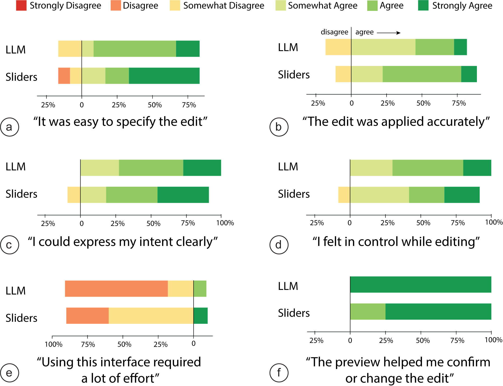
Figure 12. Likert results comparing LLM and slider interfaces. (a,c) LLM rated easier for specifying edits. (b,d) Sliders scored higher on accuracy and control. (e) LLMs required less effort. (f) Previews rated very highly across both conditions.
RQ1 (Usability & Control). Both interfaces were rated as usable, with subtle differences. The LLM interface was rated as less effortful (M = 2.67, SD = 1.23 vs. M = 3.25, SD = 1.36), while the slider interface was perceived as slightly more accurate (M = 5.17, SD = 1.19 vs. M = 5.00, SD = 1.21). Perceived control was comparable (both M = 5.58). This suggests a trade-off: LLMs lower the barrier to entry, while sliders provide a stronger sense of precision.
RQ2 (Previews). Previews received consistently high ratings across both interfaces. Participants agreed the preview clearly showed what the system would do (LLM: M = 6.67, SD = 0.65; sliders: M = 6.75, SD = 0.45) and helped them decide whether to accept or revise (LLM: all participants rated 7.0; sliders: M = 6.75, SD = 0.45). One participant noted the preview “made invisible operations visible,” suggesting that previews are critical for building trust in non-WYSIWYG editing.
RQ3 (Trade-offs). Participants were evenly split in overall preference (6 sliders, 6 LLMs), and all 12 favored a hybrid design combining both modes. Users preferring the slider mode emphasized precision: “I had more control of the edits rather than waiting to see if my intent was clearly understood by the LLM” (P1). Meanwhile, LLM advocates highlighted expressiveness: “It was easier to specify the modification I wanted” (P6). Participants described the two modes as complementary, natural language for broad creative edits such as “generating initial sketches and making big fundamental changes” (P4), and sliders for precise local refinements such as “fill in a gap, make a hole” (P2). These findings suggest that novices value the expressiveness of LLMs and the precision of sliders, and see the hybrid combination with previews as the most effective design direction.
We demonstrate InstructMesh across six application scenarios covering home decor, medical devices, personal accessories, and robotic enclosures. All examples were constructed with InstructMesh and printed on a Stratasys J55 multi-color 3D printer.
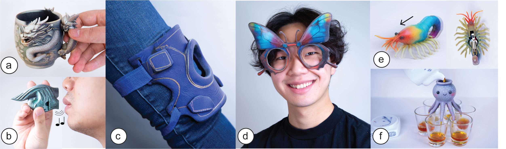
Figure 13. Applications of InstructMesh across domains. (a) Dragon mug with lid removed. (b) A functional whistle with acoustic chambers added. (c) Denim-aesthetic knee brace with strap openings added. (d) Butterfly eyeglasses with hollowed lenses and connected temples. (e) Bristle bot enclosure with electronics cavity. (f) Octopus-inspired liquids dispenser with added fluid channels.
Home Decor and Functional ObjectsPersonal fabrication tools are increasingly used to design expressive yet functional home objects. We showcase a mug with a dragon-shaped handle, where the generated model included a sealed lid. With InstructMesh, the lid was removed, producing a printable, functional version (Figure 13a). We also demonstrate an octopus-inspired liquid dispenser whose head and legs were sealed. We created a top opening, thickened the surrounding area, and added tunnels through each leg to enable fluid flow (Figure 13f).
Medical and Assistive DevicesPersonalized fabrication is increasingly important in “Medical Making” and DIY Assistive Technology, where combining function and aesthetics improves adoption. We generated “a knee brace in the style of blue denim jeans”. The model achieved the desired aesthetic but lacked functional openings for straps. Using localized edits, we created strap holes to produce a wearable, functional design, ready for printing (Figure 13c).
Personal AccessoriesInstructMesh also supports the refinement of personalized accessories. We generated “butterfly-shaped eyeglass frames” with ornate wing patterns. The initial model had filled lens regions, a thin bridge, and disconnected temples. Localized edits corrected these flaws into a functional design (Figure 13d). We also generated “an ornate whistle in the shape of a seashell” that lacked acoustic chambers. Using InstructMesh, we added tunnels and refined the resonant geometry; the fabricated whistle produces a clear tone (Figure 13b).
Robotic EnclosuresFinally, we demonstrate InstructMesh's utility in robotics with a shrimp-shaped enclosure for a bristle bot. We generated a “colorful shrimp with several legs” as an enclosure for a bristle bot housing a DC motor. The model's front and back legs would cancel forward motion, and it lacked a cavity for electronics. We shortened obstructing legs, created an underbelly cavity, and added a motor tunnel, producing a printable enclosure that enabled directed walking (Figure 13e).
InstructMesh demonstrates how fabrication-aware editing can be integrated into generative 3D workflows through selective highlights and natural language interactions. In this section, we discuss the broader implications of our system design and study results, the current limitations, and future directions.
Insights and Design GuidelinesIn Study 1, novices identified 90.4% of fabrication-relevant flaws and successfully repaired 89.7%, suggesting that post-generation repair can be made accessible through latent-space operations paired with region-based selection. This aligns with prior observations that novice makers can reason about physical properties of 3D models but lack the expert skills with 3D modeling tools to perform the relevant corrective operations. Across flaw types, detectability and repair difficulty were not always correlated (Figures 9 and 10), suggesting that future tools could benefit from both automated flaw detection and operation recommendations.
In Study 2, the even split between LLM and slider preference (6/6), combined with unanimous preference for a hybrid workflow (12/12), provides empirical support for dual-mode interaction design. From these findings, we distill four design guidelines:
We opted for heuristic-based operational design for several reasons. First, they are interpretable: each operation has a clear geometric meaning (e.g., “remove voxels within a distance threshold”) that can be previewed, parameterized, and explained to users. This interpretability is central to our WYSIWYG design goal. Second, they are composable: simple operations can be sequenced to address complex repairs, as demonstrated by combinations like fill + erode for creating bridges. Third, they require no training data, which is important given the absence of large-scale datasets of fabrication-relevant 3D edits.
A learning-based approach, such as training a model to predict voxel modifications from natural language descriptions, could potentially handle a broader range of edits and generalize to novel repair scenarios. However, such an approach could limit the transparency and controllability that our user studies identified as critical for novices. We see the two approaches as complementary: heuristic operations provide a reliable, inspectable foundation, while learned components (such as our ICL-based operation prediction) can route user intent to the appropriate operation. Future work could explore hybrid architectures where learned models propose edits that are executed through interpretable geometric primitives.
Although our implementation builds on TRELLIS, the approach is generalizable across similar two-stage generative backbones. The canonical operations act on a structured intermediate voxel representation, including recent models such as TRELLIS 2 and SAM3D. Similarly, the ICL-based operation mapping is model-independent: we validated it with GPT-4, but the same in-context approach can route instructions to operations with any modern LLM. Our formative dataset, drawn from the most popular Thingiverse designs, reflects the contexts in which novices most commonly fabricate objects, and broader fabrication domains are important areas of future work.
LimitationsWe identify several limitations and future directions for this work. We focused our evaluation on a single generative model, Trellis, due to its state-of-the-art reconstruction fidelity and to maintain a standardized evaluation pipeline. We will open-source our implementation to support future analysis across additional generative models as they continue to evolve.
The 64³ voxel grid bounds the granularity of repairs: a single voxel spans roughly 1.5% of a shape's extent, which sets the smallest feature an edit can target. The flaws identified in our formative study are meso-scale and span many voxels, making them addressable, as our evaluation demonstrates. However, sub-voxel defects cannot be repaired in the current implementation. This is a limitation of grid resolution rather than of the operations themselves and higher-fidelity backbones can improve the minimum addressable feature size.
InstructMesh supports the repair of fabrication-relevant flaws but relies on the user to diagnose them: the system assumes users can visually identify and select a problematic region. Our studies show novices do this reliably for visually apparent flaws (90.4%, Study 1), but defects such as internal wall-thickness violations or tolerance issues may only surface during slicing or after a failed print. Automatic flaw detection and operation recommendation are natural and exciting future work.
Our user studies were designed to evaluate whether novices can identify and rectify visually identifiable fabrication-relevant flaws within a generative workflow. We did not compare InstructMesh with alternative workflows such as iterative re-prompting or manual mesh repair. Such analysis would complement findings from this paper and is an important direction for future work. Similarly, our fabricated examples demonstrate applications rather than systematic printability validation.
As scoped in the System Overview, InstructMesh targets static geometry and cannot address flaws involving dynamic mechanisms such as hinges or interlocking parts. As these generative systems continue to evolve, future systems can incorporate dynamic simulations to evaluate functionality. Finally, the preview visualization uses red and green overlays, which may pose challenges for colorblind users; future iterations should explore alternative visual encodings such as patterns or shape cues.
In this work, we present InstructMesh, an interactive post-generation refinement tool that enables novices to perform fabrication-relevant repairs on generative 3D models by mapping region selections and natural language instructions to canonical latent-space operations. A formative study revealed geometric flaws in state-of-the-art generative outputs, motivating a set of composable editing operations that can be triggered via text or slider controls. A preview visualization makes this latent-editing process transparent, supporting user trust and decision-making. Our user studies show that novices can detect and repair visually identifiable flaws in under ten minutes per model, and that hybrid workflows combining natural language with structured controls are preferred. We demonstrate practical applications spanning home decor, assistive devices, personal accessories, and robotics.
We would like to extend our sincere gratitude to the MIT-Google Program for Computing Innovation, the MIT-HPI Collaborative Research Program, and the MIT Felicis Program for their generous support, which made this research possible.